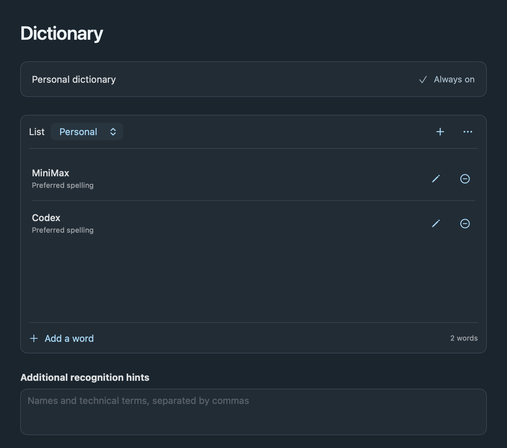
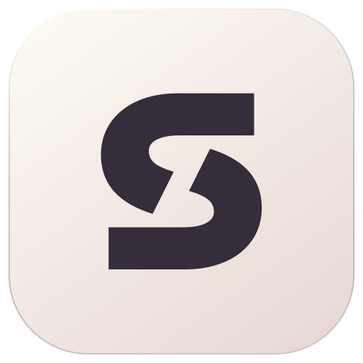

Sotto
Sotto
Hold.Speak.Release.
fn
Your shortcut.Your flow.
A little room to think.
Let’s make a little room for
the next good idea.
✓ Inserted at your cursor
•••
0:04
At your cursor. Or on your clipboard, ready to paste.
Sotto
Your voice.
Stays on your Mac.
No account.No subscription.No cloud transcription.
Offline after model setup
Only listens when you start a recording.Built for Apple Silicon
Sotto
Say it.
Give it structure.
“Make a list.
One, explore.
Two, build.”
One, explore.
Two, build.”
“Next item,
launch.”
launch.”
Room for what’s next↗
1.Explore
2.Build
3.Launch
↳ Pick up where you left off.
Spoken lists. Natural continuation.English list commands
Sotto
Your words.
Spelled your way.
minimax + codexMiniMax + Codex
Optional local proofreading

Preferred spellings and your own word lists.Always on, always local.
Sotto
The right mic.
Ready for you.
Set your order.
Sotto follows your setup.
Automatic fallback. Easy reconnects.
DeskTravel+
Automatic · priority list⌄
1USB microphoneConnected⠿
2MacBook microphoneConnected⠿
Next dictationUSB microphoneMacBook microphone
USB disconnected. Your Mac steps in.Reconnected. Your favorite is back.
Separate priority lists for desk and travel.Changes apply to your next take.
Sotto
A good thought
is worth keeping.
Find it.Copy it.Hear it again.
Transcripts and recordings.
Saved locally, when you want.
A little room to think.Today, 9:41 AM
↗
The next good idea.Today, 9:26 AM
Explore. Build. Launch.Today, 9:14 AM
Let’s make a little room for
the next good idea.
⌁ Saved on this MacCopy ✓
▶Open recording
Your words, there when you need them.Local history is optional.

Sotto
Thought, softly spoken.
Local dictation for Apple Silicon Macs.
No account. No subscription.Hold a key. Make room for a thought.